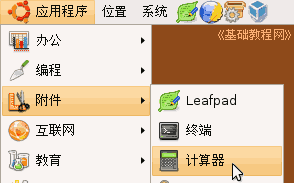
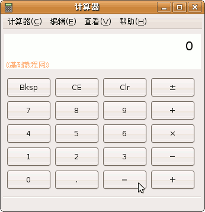
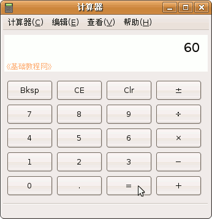
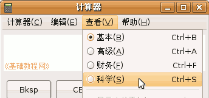
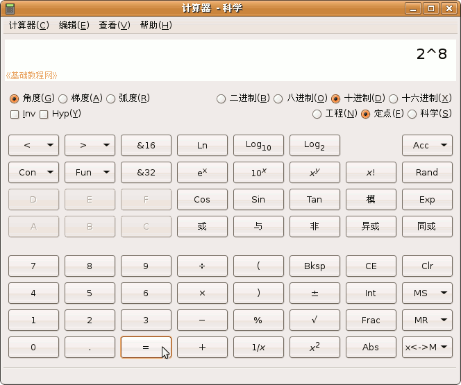

电脑操作基础
作者：TeliuTe 来源：基础教程网
二十四、计算器 返回目录 下一课附件里有一个计算器程序，可以帮助我们做一些运算，下面我们来看一个练习；
1、启动计算器
1）点菜单“应用程序－附件－计算器”；
2）出来一个计算器的窗口，有菜单、显示屏、按钮等；
；
里面的 Bksp 按钮，是退格键，消除错误的按键，CE 和 Clr 是清除和复位按钮，把鼠标移过去会有提示；
2、使用计算器
1）简单运算可以按数字按键和运算符号，最后按等号即可，
比如，依次点 12 乘号 5 等号，会在屏幕上显示 60；

2）点菜单“查看－科学”，会切换到科学计算器，可以进行复杂的数学运算；

3）例如，依次点 2 Xy 8 等号，就可以进行 2 的 8 次方运算，结果是256；

4）更多详细的用法，可以参看帮助菜单；
本节学习了在Ubuntu中计算器的基本操作，如果你成功地完成了练习，请继续学习下一课内容；本教程由86团学校TeliuTe制作|著作权所有
基础教程网：http://teliute.org/
美丽的校园……
转载和引用本站内容，请保留版权信息和本站链接。